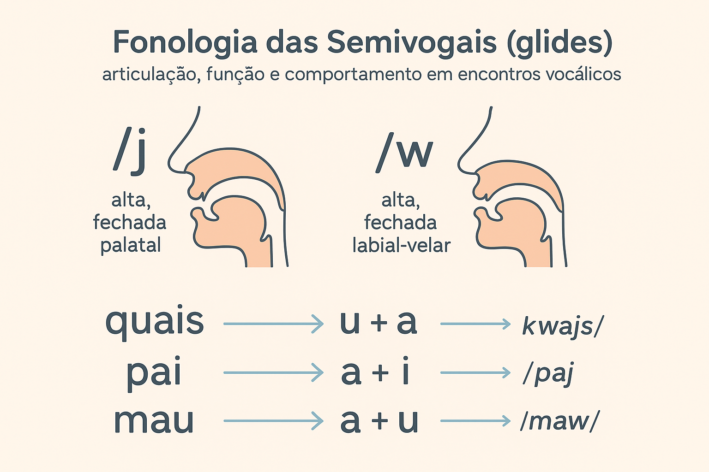

Fonologia das Semivogais (Glides / Semiconsoantes): Articulação, Funções e Comportamentos em Encontros Vocálicos
No âmbito da fonologia da Língua Portuguesa, o estatuto teórico das semivogais — internacionalmente designadas nos compêndios de Linguística como glides ou semiconsoantes — constitui um dos temas mais férteis e instigantes da descrição segmental. Situadas em um território fronteiriço entre os universos vocálico e consonantal, as semivogais exibem uma natureza híbrida: compartilham as qualidades articulatórias e formânticas das vogais altas (/i/ e /u/), mas comportam-se funcionalmente como consoantes, uma vez que são estruturalmente incapazes de constituir o núcleo independente de uma sílaba.
Longe de serem meras "vogais pronunciadas com fraqueza", os glides do português brasileiro operam como engrenagens dinâmicas de transição acústica na rima e no ataque silábico. Sua correta interpretação é a chave para desvendar a mecânica dos ditongos (crescentes e decrescentes, orais e nasais), dos tritongos, da ditongação fonética na fala espontânea e da distinção crucial entre glidezação e preservação de hiatos plenos.
Neste estudo aprofundado à luz da Fonologia Métrica e Autossegmental, examinaremos a caracterização articulatória e acústica dos glides [j] e [w], sua distribuição na geometria silábica, os casos particulares de representação gráfica (incluindo as letras e, o, m e as sequências com qu/gu), a análise fônica de vocábulos complexos, além de questões comentadas e orientações pedagógicas para a Educação Básica e exames vestibulares.

A natureza híbrida do Glide: Fone vocálico, função consonantal
Na fonética articulatória, as semivogais padrão do português brasileiro são representadas no Alfabeto Fonético Internacional (IPA) pelos símbolos [j] (glide palatal anterior) e [w] (glide labiovelar posterior). Embora a língua e os lábios assumam posições praticamente idênticas às das vogais altas cardeais [i] e [u], o gesto articulatório de um glide é caracterizado por um movimento muscular rápido e contínuo de deslizamento (gliding), desprovido de platô temporal estável.
Essa transitoriedade motora traduz-se em três propriedades fônicas fundamentais:
- Duração temporal reduzida: a duração acústica de um glide na cadeia falada corresponde a uma fração substantivamente menor da duração de uma vogal plena nuclear;
- Menor intensidade relativa: não recebem o acento tônico primário da palavra, apresentando menor amplitude de pressão sonora;
- Dependência fonotática estrita: ocorrem exclusivamente associadas a uma vogal silábica adjacente, que atua como âncora de suporte acústico.
A formulação funcional de Leda Bisol e Mattoso Câmara Jr.
Como sintetiza Leda Bisol (2005, p. 112) na obra Fonologia do Português Brasileiro: “O glide não é uma categoria articulatória autônoma oposta à vogal, mas uma posição na estrutura da sílaba. O glide é um segmento de traço [+vocálico, -consonantal] que se associa a uma posição não nuclear, funcionando como margem da rima ou do ataque”. Para Mattoso Câmara Jr. (1970), a semivogal é um satélite fonológico que gravita em torno do vértice vocálico da sílaba.
Semivogais versus Vogais Plenas: a fronteira silábica
A diferenciação entre uma vogal plena e uma semivogal não repousa na grafia do alfabeto, mas em seu estatuto funcional na partição silábica da língua:
Vogais Plenas Nuclearizadas
Constituem o ápice acústico obrigatório, autônomo e indispensável da sílaba no português.
Estatuto: Centro da sílaba (podem formar sílaba isoladamente).
Acentuação: Podem ser tônicas ou átonas.
Exemplos: pa-ís (o i é vogal plena em hiato); ba-ú (o u é vogal plena).
Semivogais (Glides Satélites)
Ocupam as posições periféricas marginais da sílaba, unindo-se à vogal nuclear sem formar nova sílaba.
Estatuto: Margem silábica (nunca formam sílaba sozinhas).
Acentuação: São invariavelmente átonas.
Exemplos: pais (o i é glide [j] em ditongo); céu (o u é glide [w]).
As semivogais na geometria da sílaba: Onset, Núcleo e Coda
Dentro do modelo autossegmental da sílaba do português (constituído por Ataque/Onset e Rima, subdividida em Núcleo e Coda), os glides desempenham papéis precisos que originam as três grandes estruturas dos encontros vocálicos:
1. Ditongos Decrescentes: o Glide na Coda silábica
Nos ditongos decrescentes, a vogal plena ocupa o núcleo e o glide posiciona-se na coda da rima silábica (Vogal + Semivogal). Ocorre um decréscimo natural de energia e de abertura bucal:
- Decrescentes orais: pai ([ˈpaj]), noite ([ˈnoj.tʃi]), ouro ([ˈow.ɾu]), meu ([ˈmew]), herói ([ɛ.ˈɾɔj]);
- Decrescentes nasais: mãe ([ˈmɐ̃j̃]), pão ([ˈpɐ̃w̃]), põe ([ˈpõj̃]), cãibra ([ˈkɐ̃j̃.bɾɐ]). Note-se que as desinências verbais átonas -am (em cantam) e -em (em cantem) encerram-se foneticamente em ditongos nasais decrescentes ([ˈkɐ̃.tɐ̃w̃] e [ˈkɐ̃.tẽj̃]).
2. Ditongos Crescentes: o Glide no Ataque ou Adjunto Nuclear
Nos ditongos crescentes, o glide precede a vogal plena nuclear (Semivogal + Vogal). A sonoridade parte de uma constrição relativa e expande-se na direção da abertura da vogal:
- Crescentes orais: á-gua ([ˈa.ɡwɐ]), pá-tria ([ˈpa.tɾjɐ]), sê-rie ([ˈsɛ.ɾji]), quá-dru-plo ([ˈkwa.dɾu.plu]);
- Crescentes nasais: sa-guão (na sílaba -guão, o [w] antecede a vogal nasal [ɐ̃]: [gwɐ̃w̃]), quando ([ˈkwɐ̃.du]).
3. Tritongos: o duplo emparelhamento de Glides
Ocorre quando a vogal plena nuclear é flanqueada simultaneamente por um glide anterior no ataque e um glide posterior na coda, cumprindo a fórmula rígida: Glide + Vogal + Glide ([w/j] + V + [w/j]):
- Tritongo oral: U-ru-guai ([u.ɾu.ˈɡwaj]), Pa-ra-guai, i-guais ([i.ˈɡwajs]), delinquiu ([de.lĩ.ˈkwiw]);
- Tritongo nasal: sa-guão ([sa.ˈɡwɐ̃w̃]), quão ([ˈkwɐ̃w̃]), enxáguem ([ẽ.ˈʃa.ɡwẽj̃]).
A armadilha ortográfica: letras que atuam secretamente como Glides
No português, a correspondência entre a letra escrita e o glide fonológico não é biunívoca. É imperativo atentar para três casos em que o glide não é grafado com as letras I ou U:
1. A letra E como glide [j]: em mãe ([ˈmɐ̃j̃]), pães ([ˈpɐ̃j̃s]), peixe ([ˈpej.ʃi]) e nas formas verbais como falei ([fa.ˈlej]);
2. A letra O como glide [w]: em pão ([ˈpɐ̃w̃]), mão ([ˈmɐ̃w̃]), chão ([ˈʃɐ̃w̃]) e caos ([ˈkaws]);
3. A letra M em final de vocábulo: em palavras oxítonas ou monossilábicas terminadas em -em ou -am (como também, cem, foram), a letra m final não representa uma consoante oclusiva bilabial, mas a nasalização da semivogal de fechamento do ditongo ([tɐ̃.ˈbẽj̃], [sẽj̃], [ˈfo.ɾɐ̃w̃]).
O comportamento dos glides com as sequências "QU" e "GU"
Uma das fontes mais frequentes de confusão analítica reside nas sequências ortográficas qu e gu seguidas das vogais e e i. O grafema u pode desempenhar dois papéis fonológicos radicalmente opostos:
| Palavra Exemplo | Transcrição Fonética (IPA) | Comportamento da letra "U" | Classificação Fonológica Precisa |
|---|---|---|---|
| quase | [ˈkwa.zi] | Pronunciada como glide [w] | Ditongo crescente oral (/k/ + [w] + /a/) |
| água | [ˈa.ɡwɐ] | Pronunciada como glide [w] | Ditongo crescente oral (/g/ + [w] + /a/) |
| cinquenta | [sĩ.ˈkwẽ.tɐ] | Pronunciada como glide [w] diante de e | Ditongo crescente nasal (/k/ + [w] + /ẽ/) |
| aguar | [a.ˈɡwaʁ] | Pronunciada como glide [w] | Ditongo crescente oral (/g/ + [w] + /a/) |
| quero | [ˈkɛ.ɾu] | Não pronunciada (muda) | Dígrafo consonantal (qu = /k/) — NÃO há glide |
| guerra | [ˈɡɛ.ʁɐ] | Não pronunciada (muda) | Dígrafo consonantal (gu = /g/) — NÃO há glide |
| quilo | [ˈki.lu] | Não pronunciada (muda) | Dígrafo consonantal (qu = /k/) — NÃO há glide |
| guitarra | [ɡi.ˈta.ʁɐ] | Não pronunciada (muda) | Dígrafo consonantal (gu = /g/) — NÃO há glide |
Nota de correção científica: Em algumas cartilhas desatualizadas, afirma-se incorretamente que em quero há ditongo. Na norma culta e na fonologia do português, em quero a letra u não é audível; logo, qu é estritamente um dígrafo consonantal representativo da oclusiva velar surda /k/. O glide [w] diante de e/i ocorre somente em vocábulos em que o u é obrigatoriamente pronunciado (como cinquenta, tranquilo, aguentar).
Análise fonológica na prática: o caso emblemático de "Quais"
Para sintetizar a operação simultânea dos glides na arquitetura silábica do português, acompanhe a dessecação fonológica do monossílabo "quais":
Dissecação do Vocábulo "Quais" ([kwajs])
1. Inventário ortográfico: 5 letras (q - u - a - i - s).
2. Transcrição fonológica e fonética: /k-w-a-j-s/ → [kwajs].
3. Estrutura silábica interna:
- Ataque complexo (Onset): oclusiva velar surda /k/ seguida imediatamente pelo glide labiovelar [w] (formando o grupo labiovelar /kw/);
- Núcleo da rima (Peak): vogal baixa central plena /a/, que suporta toda a energia tônica do monossílabo;
- Coda complexa: glide palatal anterior [j] seguido pela consoante fricativa sibilante alveolar /s/.
Conclusão analítica: A palavra quais reúne na mesma sílaba um ditongo crescente na entrada (/kwa/) e um ditongo decrescente na saída (/ajs/), mobilizando simultaneamente os dois glides canônicos da língua portuguesa ([w] e [j]) ao redor de um único núcleo vocálico (/a/).
Esquema pedagógico: o algoritmo de identificação dos Glides
Fluxo de Decisão Fonológica para Semivogais
Segmento vocálico contíguo identificado (letras i, u, e, o)
→ Recebe o acento tônico da palavra?
• Sim: Vogal Plena (forma sílaba isolada ou núcleo; ex.: sa-í-da, ba-ú = Hiato).
• Não:
↳ Apoia-se na vogal vizinha na mesma sílaba?
• Sim: Semivogal / Glide ([j] ou [w] compondo ditongo ou tritongo).
• Não (está em sílaba átona separada): Vogal Plena Átona (ex.: co-o-pe-rar).
Questões para estudo e fixação
Questão 1 (Glides e Dígrafos / Concurso Público)
Assinale a alternativa em que a letra u destacada atua fonologicamente como semivogal (glide [w]):
A) Quente.
B) Guerra.
C) Quase.
D) Aquilo.
Ver resposta comentada
Resposta comentada: Alternativa C. Na palavra quase (/k-w-a-z-i/), a letra u é articulada de forma audível como um glide labiovelar ([w]), compondo com a vogal /a/ um ditongo crescente oral. Nas alternativas A, B e D, a letra u não é pronunciada, funcionando os grupos qu e gu como dígrafos consonantais representativos dos fonemas /k/ e /g/.
Questão 2 (Letras E e O como Semivogais)
Nas palavras "mãe" e "pão", as letras e e o representam, respectivamente:
A) Vogais plenas nucleares formando hiato com o a.
B) Consoantes nasais bilabiais de travamento silábico.
C) Semivogais nasalizadas que formam ditongos decrescentes nasais.
D) Dígrafos consonantais equivalentes a /nh/.
Ver resposta comentada
Resposta comentada: Alternativa C. Em mãe (/m-ã-j̃/) e pão (/p-ã-w̃/), a vogal plena e núcleo da sílaba é a vogal /ã/. As letras e e o sofrem glidezação, funcionando fonologicamente como as semivogais palatal ([j̃]) e labiovelar ([w̃]) nasalizadas, constituindo ditongos decrescentes nasais.
Questão 3 (Tritongo e Posição dos Glides)
Qual é a ordenação sequencial obrigatória dos segmentos que compõem a rima e o ataque de um tritongo legítimo no português?
Ver resposta comentada
Resposta comentada: A ordenação estrutural obrigatória e inflexível é Semivogal + Vogal Plena + Semivogal (SV + V + SV), como observado em U-ru-guai (/g-w-a-j/) e sa-guão (/g-w-ã-w̃/). Não existe tritongo iniciado ou finalizado por vogal plena, tampouco tritongo com duas vogais nucleares consecutivas na mesma sílaba.
Questão 4 (Ditongo Fonético Oculto)
Por que os linguistas afirmam que o vocábulo "falaram" encerra-se fonologicamente em um ditongo decrescente, muito embora a escrita termine na consoante m?
Ver resposta comentada
Resposta comentada: Porque no português contemporâneo, a terminação átona -am não se realiza com a articulação de uma consoante oclusiva bilabial [m]. A vogal /a/ nasaliza-se e gera espontaneamente um glide de fuga labiovelar nasalizado ([w̃]), produzindo a pronúncia real [ˈfa.lɐ.ɾɐ̃w̃]. Trata-se de um ditongo decrescente nasal fonético.
Questão 5 (Transposição Didática: Ditongo vs. Hiato)
Como a correta distinção entre semivogal e vogal auxilia na compreensão das regras de acentuação dos vocábulos paroxítonos como "história" e "fácil"?
Ver resposta comentada
Resposta comentada: A regra oficial de acentuação prescreve que as paroxítonas terminadas em ditongo crescente oral (seguido ou não de s) devem receber acento gráfico (como em his-tó-ria, sê-rie, má-goa). O estudante que sabe identificar que o encontro final é composto por semivogal + vogal aplica a regra com total clareza, distinguindo essas palavras daquelas terminadas em hiatos plenos.
Resumo da fonologia das semivogais
- Semivogais (Glides / Semiconsoantes): segmentos fônicos ([j] e [w]) que possuem qualidade vocálica, mas função silábica consonantal (não nuclear);
- São invariavelmente átonas e possuem menor duração e intensidade que as vogais plenas;
- Ditongos decrescentes: Vogal + Glide (ex.: pai, meu, noite, mãe);
- Ditongos crescentes: Glide + Vogal (ex.: água, pátria, série);
- Tritongos: fórmula fixa e obrigatória Glide + Vogal + Glide (ex.: Uruguai, saguão);
- As letras e e o funcionam frequentemente como glides em posição pós-vocálica (ex.: mãe, pão);
- Nas sequências qu e gu, o u só é semivogal se for pronunciado (ex.: quase); se for mudo (ex.: quero, guerra), trata-se de dígrafo consonantal;
- As terminações átonas -am e -em configuram foneticamente ditongos nasais decrescentes ([ɐ̃w̃] e [ẽj̃]).
Perguntas frequentes sobre semivogais e glides
Por que as semivogais também são chamadas de glides ou semiconsoantes?
O termo inglês glide (deslizar) descreve o movimento articulatório contínuo e rápido dos órgãos fonadores durante sua emissão. O termo semiconsoante evidencia que, embora tenham som parecido com o de vogais, seu comportamento na sílaba é idêntico ao de uma consoante periférica marginal.
A semivogal pode receber acento tônico?
Não, jamais. O acento tônico recai unicamente sobre a vogal plena que atua como núcleo da sílaba. Se um segmento sonoro vocálico for acentuado tonicamente (como o i em sa-í-da ou o u em ba-ú), ele converte-se automaticamente em vogal plena, formando hiato.
Como diferenciar semivogal de vogal na palavra "raiz" e "raiva"?
Em ra-iz, as duas emissões têm força nuclear autônoma e separam-se em sílabas distintas (hiato; o i é vogal plena). Em rai-va, o i é um glide fraco associado ao a na mesma sílaba, formando ditongo decrescente oral.
A letra "M" no final de palavras pode formar semivogal?
Sim. Em vocábulos como bem, também e falam, a consoante bilabial não é ocluída nos lábios; a letra m gera a nasalização da vogal anterior e o surgimento de um glide palatal ou labiovelar nasalizado ([ẽj̃], [ɐ̃w̃]).
O que é a ditongação fonética na fala brasileira?
É a inserção espontânea de um glide palatal [j] entre uma vogal tônica e a consoante sibilante /s/ em final de sílaba, extremamente comum em palavras como arroz ([a.ˈʁojs]), três ([ˈtɾejs]) e nós ([ˈnɔjs]).
Por que "quero" tem dígrafo e "cinquenta" tem ditongo?
Porque em quero a letra u não é pronunciada (o grupo qu soa apenas como o fonema oclusivo /k/). Em cinquenta, a letra u é articulada como semivogal labiovelar [w] antes da vogal nasal [ẽ].
Qual é a representação fonética padrão dos glides no alfabeto IPA?
O glide palatal (semelhante ao som de i) é grafado como [j]. O glide labiovelar (semelhante ao som de u) é grafado como [w]. Suas contrapartes nasalizadas recebem o til superior: [j̃] e [w̃].
Existe semivogal isolada formando palavra?
Não. Como a semivogal não possui sustentação acústica nuclear para gerar sílaba, ela necessita obrigatoriamente de uma vogal plena para existir no fluxo da fala da Língua Portuguesa.
Considerações finais
A fonologia das semivogais evidencia a plasticidade e o refinamento do sistema sonoro da Língua Portuguesa. Ao desmistificar a falsa equivalência entre letra escrita e som fonológico, o estudante e o educador passam a compreender os encontros vocálicos não como acidentes mecânicos da ortografia, mas como processos sofisticados de organização rítmica e silábica regidos por princípios de economia articulatória e harmonia acústica.
O domínio das propriedades dos glides — de sua atuação nas margens da rima até seu papel em ditongos crescentes e decrescentes — confere sustentação teórica e prática indispensável para a análise fonológica, para o ensino reflexivo de língua materna e para o sucesso na resolução de questões em vestibulares e concursos públicos de alto rendimento.
Conteúdos relacionados
- Fonologia: fonemas, sílabas e estrutura sonora da Língua Portuguesa — Índice de Conteúdos
- Fonema e Letra: Uma distinção fundamental na análise linguística
- Tipos de Fonemas: Vogais, Semivogais e Consoantes
- Classificação Fonética Detalhada das Vogais
- Encontros Vocálicos e Consonantais: Quando os sons se encontram
- Hiatos, Ditongos e Tritongos: como identificar e exemplos
- O Som das Palavras: Sílaba, Tonicidade e Prosódia
- Fonologia e Fonética: distinções conceituais
- Processo de Elisão (ou Supressão) de Segmentos Fonológicos
Referências
- BISOL, Leda (org.). Introdução a Estudos de Fonologia do Português Brasileiro. 4. ed. Porto Alegre: EDIPUCRS, 2005.
- CAGLIARI, Luiz Carlos. Alfabetização e Linguística. 10. ed. São Paulo: Scipione, 2009.
- CÂMARA JR., Joaquim Mattoso. Estrutura da Língua Portuguesa. 20. ed. Petrópolis: Vozes, 2011.
- CÂMARA JR., Joaquim Mattoso. Problemas de Linguística Descritiva. 18. ed. Petrópolis: Vozes, 2004.
- CRYSTAL, David. A Dictionary of Linguistics and Phonetics. 6. ed. Oxford: Blackwell Publishing, 2008.
- MATEUS, Maria Helena Mira et al. Gramática da Língua Portuguesa. 6. ed. Lisboa: Caminho, 2003.
- MATEUS, Maria Helena Mira; BRITO, Ana Maria. Fonética e Fonologia do Português. Lisboa: Universidade Aberta, 1991.
- SILVA, Thaïs Cristófaro. Fonética e Fonologia do Português: roteiro de estudos e guia de exercícios. 10. ed. São Paulo: Contexto, 2010.
Explore outros conteúdos
Continue seus estudos acessando outras seções do site Mestre Kira: